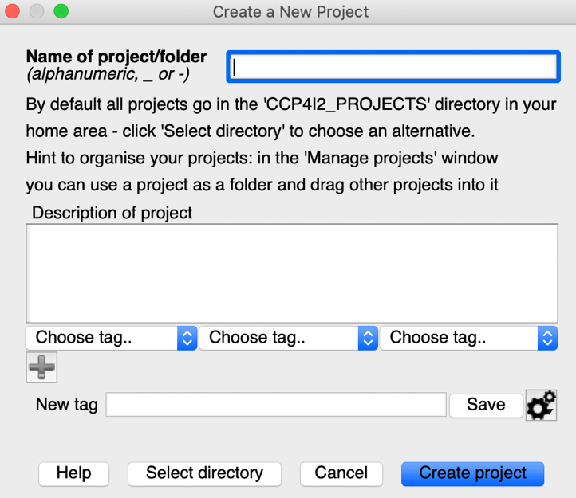
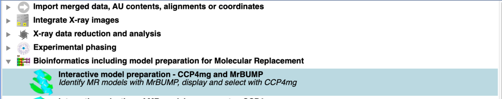
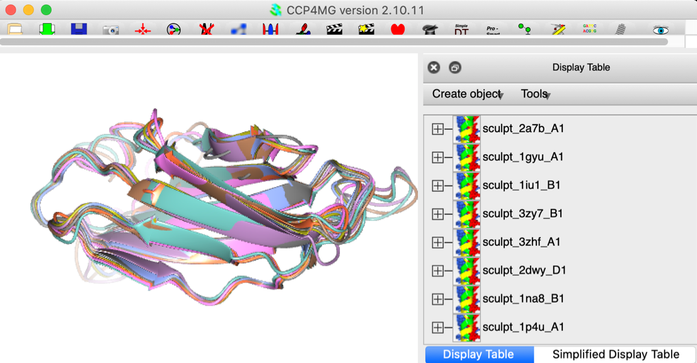
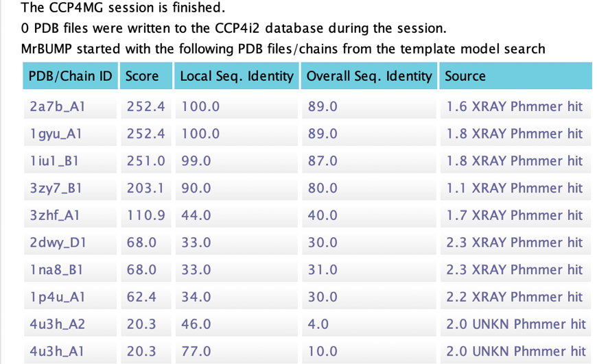

|
CCP4i2 Tutorial — Starting a Project |
This short tutorial shows how to load the basic data required to run projects in CCP4i2 and should be run before embarking on the other tutorials. We will use the Gamma test data as an example. You may wish instead to use your own sequence and data.
A Tips window appears — close and proceed.
Select File/Project -> New project from top menu bar. You will be presented with a window like the image below. Give the project a name, e.g. Gamma, then click "Create project".
Double click on the Task in the Task Window on the right-hand side:

Click on the brown file browser button and a file browser will pop up. Select "demo-data" in the LH panel, select Gamma, then gamma.pir. Run the job to load the Gamma sequence

If you are loading your own structure, instead load the appropriate sequence file.
There are many Bioinformatics tools outside CCP4i2 for identifying homologue and selecting potential search models or ensembles for MR. Indeed, the MrBUMP Task will search for suitable MR models and then use those found. But at this point CCP4i2 provides a powerful interactive tool for finding and selecting model(s), and indeed for checking whether a structure for your sequence is already in the PDB.
Click on the "Task menu" button in toolbar to bring back the task list. Select:
Interactive model preparation — CCP4mg and MrBUMP Task.


Select the AU contents imported above.
The Task will then search a library of sequences present in the PDB to identify suitable candidates for search models and truncate these using the sequence information and display the Sculpted models in CCP4mg. The coverage of the target sequence is presented in a separate window. The user can then select a single model or an ensemble in the CCP4mg window and save the selection to the i2 database. The model or ensemble can then be used with either the MOLREP or Phaser Tasks. Note that the top 4 sequences (2a7b, 1gyu, 1iui, 3zy7) are just the Gamma structure itself and should not be used. Select either the truncated and sculpted 3zhf or 2dwy as suitable search models, or an ensemble of the structures excluding the top four.

Moving the slider in the domain view to the left gradually excludes those parts of the selected models which are not conserved across the models displayed, allowing the user to select a more conserved set of features for output from the Task.
When you are happy with the results of moving the slider, you can save the visible ensemble (to potentially use as molecular replacement search model) by selecting File ‑> Save all to ccp4i2 database.
To terminate the Task, quit CCP4mg when the report will list the structures selected by MrBUMP for use later.
Double click on the Task. Click on the brown file browser button as for the sequence.

If you are using the Gamma data, select "demo-data" in the LH panel, select Gamma, and then gamma_native.mtz which contains the unmerged native data for the protein. Note: items highlighted in red are essential before the Task will run. A Crystal name and dataset name must be provided. (Suggested names: Gamma and native).

The Results summary will suggest to what resolution the data are useful (based on CC1/2 > 0.3). For the Gamma data the full resolution range can be used to 1.81Å. Look at the merging statistics. For most projects it is necessary to run this task twice — first to analyse all the observations, then after checking the report provided, to cut the list to a sensible resolution range and exclude any bad image(s). ALWAYS study the data merging output VERY carefully.
You are now ready to start on the more detailed tutorials.